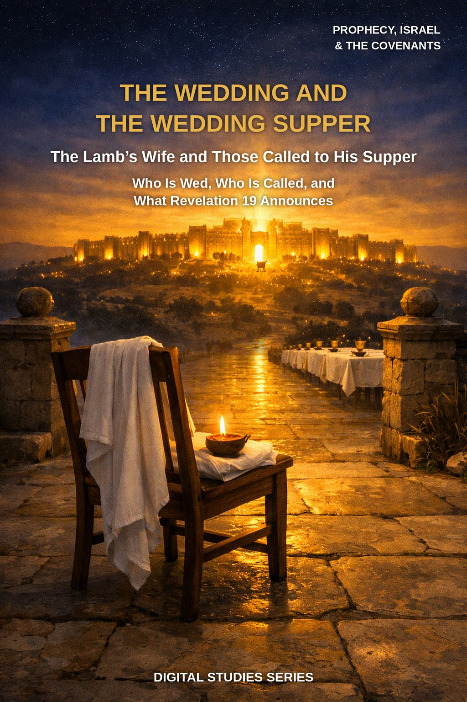
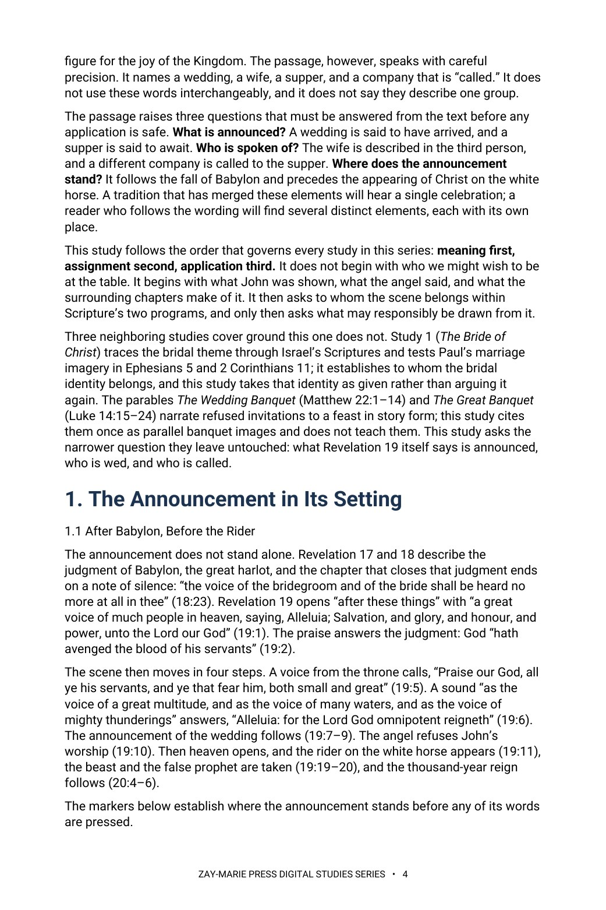

The Wedding and the Wedding Supper
The Lamb’s Wife and Those Called to His Supper
Who is wed, who is called, and what does Revelation 19 announce?
Revelation 19 is often sung as a single celebration in which every redeemed person is both bride and guest. Yet the passage names a wedding, a wife, a supper, and a company that is “called,” and it does not use those words interchangeably.
This study begins where John does: after Babylon’s fall and before the rider on the white horse. It weighs the words of the announcement, traces the bridal thread through Isaiah, Hosea, and Ezekiel, sets the two suppers of Revelation 19 side by side, and only then asks what may be drawn from the scene, holding to one order throughout: meaning first, assignment second, application third.
Read the Announcement in Order: Meaning, Assignment, Application
You will read Revelation 19:6–10 as John recorded it: after the judgment of Babylon, before the appearing of Christ, and in the vocabulary of Israel’s prophets. You will follow who is spoken of and who is speaking, weigh the Greek words for “marriage” and “supper,” and compare the two suppers of Revelation 19. You will then set the Gospels’ wedding scenes beside the passage and test four common readings against the text before drawing any application.
Readers who already own Study 1 (The Bride of Christ), Study 27 (Israel’s Seven Appointed Feasts), or Study 4 (Israel and the Body of Christ) will recognize adjoining ground. Study 1 traces the bridal theme through Israel’s Scriptures and tests Paul’s marriage imagery in Ephesians 5 and 2 Corinthians 11; this study takes the Bride’s identity as established there and does not argue it again. Study 27 works through the seven appointed feasts of Leviticus 23 and does not treat the marriage supper. Study 4 sets out the broad comparison of Israel and the Body, which this study assumes rather than rebuilds. The parables The Wedding Banquet and The Great Banquet narrate refused invitations to a feast in story form; this study cites them as parallel banquet images and does not teach them. The question this study alone answers: what does Revelation 19:6–10 announce, who is wed, and who is called to the supper?
How These Studies Relate
Study 64 reads one announcement from Revelation. The studies below supply the neighboring ground it deliberately does not repeat.
Study 1 — The Bride of Christ Trace where Scripture places bridal language and what Paul’s marriage imagery does; Study 64 takes that identification as given and reads the wedding announcement itself.
Study 27 — Israel’s Seven Appointed Feasts Follow Israel’s covenant calendar; Study 64 reads a Kingdom-threshold banquet that is not one of the Leviticus 23 feasts.
Study 4 — Israel and the Body of Christ Use the larger Israel and Body comparison as the frame within which this scene is assigned.
Trace the Announcement Before You Conclude
The Setting of the Announcement
Read Revelation 19:1–10 in its own setting by tracing what precedes it in chapters 17 and 18 and what follows it in 19:11–21 and 20:4–6.
Who Is Spoken Of
Trace who is spoken of and who is speaking in 19:7–9 by following the text’s own markers — the third-person “his wife,” the passive “was granted,” and the verb “called.”
Marriage and Supper
Weigh the two Greek words behind “marriage” and “supper” (gamos and deipnon) by following each through its other uses in Revelation 19 and the Gospels.
Two Suppers in One Chapter
Set the two suppers of Revelation 19 side by side — the marriage supper of the Lamb (19:9) and the supper of the great God (19:17) — and note what each text says about who is present.
The Bridal Thread and the Gospels
Follow the bridal thread from Isaiah, Hosea, and Ezekiel into Revelation 21, and test the Gospels’ wedding vocabulary against the same wording in Revelation 19.
Testing Four Readings
Apply a repeatable discipline for testing four common readings of the wedding and the supper, and for receiving Revelation’s imagery without transferring its assignment.
Read the Word in Its Context
Revelation 18:21–24
Babylon’s fall and the silence of the bridegroom’s and the bride’s voice.
Revelation 19:1–6
Heaven’s Alleluia and the announcement that the Lord God reigns.
Revelation 19:7–10
The announcement of the marriage, the wife’s linen, the blessing on the called, and John’s worship refused.
Revelation 19:11–21
The rider on the white horse and the second supper of the chapter.
Revelation 21:2, 9–14
John’s vision of the city, the bride, and the names on its gates.
Isaiah 61:10–62:5
Bridegroom and bride imagery in Isaiah’s promises for Zion.
John 3:25–30
John the Baptist and the friend of the bridegroom.
Isaiah 25:6–9
A feast on the mountain of the LORD, and the people’s waiting answered.
Setting Before Scene
The wedding announcement is read from what surrounds it.
A harlot is judged before it, a rider is revealed after it, and a reign follows. The scene is settled from its chapter before any single phrase of it is applied.
Preview the Study Before You Purchase
Click any page to enlarge it for reading.



The Announcement in Its Setting
Read what surrounds the announcement before its words are pressed.
A Focused Study of the Wedding and the Supper
16-Page Digital PDF
Approved cover and 15-page numbered interior.
9 Teaching Sections
A text-driven study from the setting of Revelation 19 to careful application.
Callout Boxes
Five callout boxes marking the study’s key working rules.
Comparison Tables
Setting markers, the bridal thread, the two suppers, the wife and the called, and four common readings.
Scripture-Tracing Exercise
Six guided traces through the passages the study relies on.
Guided Further Study
Five passage groups for deeper reading.
Review Questions
Eleven questions testing the study’s markers and method.
Final Synthesis Exercise
A written synthesis drawing the whole study together.
The Wedding and the Wedding Supper
16-page digital PDF · For personal use